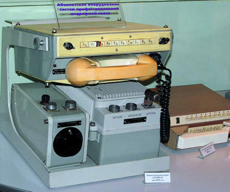

http://www.mobi.ru/Articles/1135/Mobilnaya_svyaz_rozhdennaya_v_SSSR.htm
М.Рамендик
Мобильная связь, рожденная в СССР
Все мы привыкли к тому, что мобильные технологии и устройства приходят из-за рубежа. И стандарты связи (например, GSM), и сами телефоны, и все оборудование операторов - носят на себе клеймо "Made in не-у-нас". США, Европа, Япония и даже Китай снабжают нас связью. И как-то забылось уже, что раньше мы сами были лидерами в этой области. В свое время именно в нашей стране была запущена первая в мире сеть автоматической мобильной связи. И если бы не отношение советского руководства, возможно, мы бы и теперь говорили не по "нокиям", а по "волемотам"...
Первые "мобильные телефоны" появились в конце 1940-х годов, однако они едва помещались в багажник автомобиля, и чтобы позвонить по ним, приходилось сначала найти свободный радиоканал и поговорить с "барышней".
Такие автомобильные рации появились и в СССР. За время войны производство компактных радиостанций весьма серьезно шагнуло вперед, и поставить простой "радиотелефон" в багажник начальственной "Волги" оказалось вполне реально. Рации работали на общих фиксированных частотах, обеспечивая связь руководителей между собой и с центральными диспетчерскими пультами.
Вот только пользоваться такими устройствами было не слишком просто. То, что было естественным для командира на войне, не могло устроить председателя обкома или директора завода.
Так, чтобы говорить, нужно было нажать на специальную кнопку передачи (обычно она находилась прямо на микрофоне - так называемая тангента); при этом говорящий уже не слышал другую сторону. А ведь советские начальники не привыкли выдавать по-армейски четкие депеши и затем произносить "прием", давая слово другой стороне. Они нередко перебивали друг друга, говорили одновременно... В общем, разговор по рации мог оказаться длительным и не очень-то эффективным. К тому же связь с проводными телефонами (обычными или "специальными", начальственными) можно было установить только через диспетчера, и то далеко не везде.
Чтобы полноценно руководить "народным хозяйством" из автомобиля, требовался настоящий телефон, похожий на тот, что стоял на начальственном столе. И надо отдать должное советским ученым и инженерам - такой телефон появился. Более того - на момент его появления в других странах аналогов не было.
"Алтай" из Воронежа: первый в мире

Мобильный телефон "Алтай" 1960-х годов.
Подобными телефонами пользовались высшие руководители СССР.

Мобильный телефон "Алтай-3М" 1980-х годов - звезда московской Олимпиады-80.
Многие знают Воронеж как родину мультипликационного котенка с улицы Лизюкова. Но этот город славен отнюдь не только патриотическими котятами и умными воронами. Именно здесь, в Воронежском НИИ Связи (ВНИИС), был создан советский мобильный телефон.
Работа над системой, названной "Алтай", началась в 1958 году. Именно во ВНИИС были созданы абонентские станции (проще говоря, собственно телефоны) и базовые станции для связи с ними. Антенные системы были разработаны в московском Государственном Специализированном Проектном Институте (ГСПИ), там же, где рождалось советское телевидение. Над другими составляющими "Алтая" работали ленинградцы, а позднее присоединились предприятия из Белоруссии и Молдавии. Специалисты из разных частей Советского Союза объединили усилия, чтобы создать абсолютно уникальный на тот момент продукт - автоматическую мобильную связь.
"Алтай" должен был стать полноценным телефоном, устанавливаемым в автомобиле. По нему не просто можно было говорить, как по обычному телефону (т.е. звук проходил в обе стороны одновременно, т.н. полнодуплексный режим). Чтобы позвонить на другой "Алтай" или на обычный телефон, достаточно было просто набрать номер - как на настольном телефонном аппарате, без всяких переключений каналов или разговоров с диспетчером.
Реализовать эту возможность при тогдашнем техническом уровне было непросто. Цифровой связи, разумеется, еще не было; голос передавался в эфире привычным образом. Но, кроме голоса, нужно было передавать специальные сигналы, с помощью которых система могла сама найти свободный радиоканал, установить связь, передать набираемый телефонный номер и т.д.
Это теперь мы привыкли "нащелкивать" номер на кнопках мобильника. А в 1963 году, когда в Москве была запущена опытная зона системы "Алтай", настоящий телефон в машине производил неизгладимое впечатление. Разработчики постарались сделать его как можно более похожим на привычные аппараты: у "Алтая" была трубка, а в некоторых моделях - даже диск для набора номера. Впрочем, от диска вскоре отказались и заменили его кнопками, поскольку крутить диск в автомобиле оказалось неудобно.
Партийные руководители пришли в восторг от новой системы. Автомобильные телефоны вскоре появились в "ЗИЛах" и "Чайках" высших кругов номенклатурной "аристократии". За ними последовали и "Волги" директоров важнейших предприятий.
"Алтай", конечно, не был сотовой системой. Один город вместе с пригородами обслуживался всего лишь одной базовой станцией с шестнадцатью радиоканалами. Но для небольшого количества высших начальников, которым была доступна мобильная связь, этого первое время хватало.
Использовался частотный диапазон 150 МГц - это частоты того же порядка, что и метровый диапазон телевидения. Поэтому антенна, установленная на высокой башне, позволяла обеспечить связь на расстоянии до десятков километров.
Аналогичная система в США, IMTS (Improved Mobile Telephone Service), была запущена в опытной зоне на год позже. А коммерческий ее запуск состоялся лишь в 1969 году. Между тем в СССР к 1970 году "Алтай" был установлен уже примерно в 30 городах!
В Москве, Ленинграде, Ташкенте, Ростове, Киеве, Воронеже и многих других городах (и областях) СССР партийные и хозяйственные руководители могли спокойно говорить по телефону из машины. Наша страна - как это ни странно слышать теперь, - уверенно лидировала в области мобильной связи.
Олимпийский триумф
Система "Алтай" в 1970-е годы активно развивалась. Были выделены новые радиоканалы (22 "ствола" по 8 каналов) в диапазоне 330 МГц - т.е. на чуть более длинных волнах, чем "дециметровое" телевидение, что позволяло обеспечивать немалую дальность и одновременно обслуживать больше абонентов. Благодаря применению первых микросхем абонентские станции становились все более компактными - хотя все же оставались автомобильными (можно было переносить телефон вместе с аккумуляторами в увесистом чемоданчике).
Особые работы по модернизации оборудования пришлось провести к московской Олимпиаде 1980 года. Более того - именно к Олимпиаде базовая станция "Алтая" переселилась на Останкинскую телебашню. До этого она занимала два верхних этажа высотного здания на Котельнической набережной.
На Олимпиаде-80 связь системы "Алтай-3М" использовалась весьма широко и показала себя с лучшей стороны. Так, практически все журналистские репортажи с соревнований проходили именно через "Алтай". Советские связисты стали победителями Олимпиады вместе с советскими спортсменами; олимпийских медалей, правда, им не досталось, но Государственную Премию СССР получили многие ведущие разработчики.
"Связь народу не нужна!"
Впрочем, во время Олимпиады стали проявляться и ограничения "Алтая". Иногда журналисты жаловались на плохую связь; инженеры рекомендовали им немного переставить автомобиль, и все тут же налаживалось.
Чтобы телефон без проводов стал массовым, требовалось дальнейшее развитие системы - в частности, переход к ныне привычному использованию множества базовых станций, "накрывающих" соседние участки территории. И советские инженеры были вполне готовы к этому развитию. К сожалению, такой готовности не было у руководства СССР.
Система "Алтай" была хорошо приспособлена к иерархии советских начальников. Например, руководитель мог поговорить с несколькими подчиненными одновременно, чтобы раздать им указания (тогда это называлось "циркулярный звонок"; сейчас подобная возможность известна как "конференц-связь"). Разговор начальников высшего ранга мог "сбросить с линии" низших, если не хватало каналов. И, разумеется, у разных абонентов были разные права и возможности. Кто-то мог звонить в любую точку СССР (а то и мира), кто-то - только на телефоны своего города или организации. Некоторым позволялось только связываться с другими телефонами того же "Алтая". Словом, была создана идеальная система, полностью подстроенная под иерархическую номенклатурную лестницу.
Но больше всего в стране было тех, кому вообще было не положено пользоваться мобильной связью. И, по мнению руководства, незачем было давать это право всем. Понятно, что телефон в автомобиле необходим секретарю обкома или директору завода, а остальным-то зачем? Капиталистическая роскошь не нужна советскому народу!
Впрочем, дело было скорее даже не в роскоши. Не стоит представлять партийное руководство как сборище паразитов, только и думающих, как отнять последнюю рубашку у своего народа. Главная причина запрета на развитие гражданских мобильных сетей - иная. Мобильный телефон дает дополнительную степень свободы своему владельцу. Такого гражданина куда сложнее контролировать, а в советской системе возможность контроля за каждым "винтиком" выпестовывалась десятилетиями, и отказаться от нее значило заложить под систему демократическую бомбу. Именно по этой же причине в СССР находились под запретом и ручные радиостанции CB-диапазона.
Не согласен с аршументом: учитывая стоимость системы в то время, ее просто нельзя было купить в частном порядке практически никому. При этом весьма ограниченное кол-во каналов можно было бы легко прослушивать, о чем в статье и говорится далее.
Задержанный "Волемот"
Специалисты ВНИИС и других предприятий в начале 1980-х годов были готовы к работе над системой связи нового поколения. Она получила название "Волемот" (сокращение от названий городов, где находились разработчики: Воронеж, Ленинград, Молодечно, Тернополь). Особенностью "Волемота" была возможность полноценно использовать множество базовых станций; во время разговора можно было переключиться с одной из них на другую без потери связи.
Эта функция, известная ныне как "хэндовер" и позволяющая весть разговоры в движении без всяких проблем, делала "Волемот" практически сотовой связью. К тому же поддерживался автоматический роуминг: аппарат "Волемот", зарегистрированный в сети одного города, можно было использовать в другом. При этом использовался все тот же диапазон 330 МГц, и каждая базовая станция могла при необходимости "накрывать" связью десятки квадратных километров.
"Волемот" мог бы стать массовой связью для сельской местности, "верным другом" колхозников, дачников и туристов. Для этой цели он подошел бы лучше, чем западные сотовые системы, разработанные в тот же период (AMPS, NMT), поскольку было легко обеспечить его работу на весьма обширной территории. А вот для обслуживания множества абонентов на малой территории (в городе) "Волемот" уступал AMPS и NMT; дальнейшее развитие, впрочем, могло бы решить эту проблему.
Мобильную связь, на самом деле, вполне можно было вписать и в советский образ жизни, и в коммунистическую идеологию. Телефоны могли бы, например, устанавливаться в селах и дачных поселках для коллективного использования и выдаваться напрокат в туристических клубах (на время похода). Услуга звонка с "Волемота" могла появиться в дальних поездах или автобусах. И, конечно, никакой угрозы "государственной безопасности" не возникало - мобильную связь без устройств шифрования очень легко прослушивать.
Однако несколько лет для проекта "Волемот" не удавалось получить необходимое финансирование. Массовая связь считалась ненужной и даже вредной, а для начальства хватало и "Алтая". Между тем сотовые системы на Западе активно развивались и приобретали популярность. За начало - середину 1980-х годов прежнее лидерство было упущено.
"Волемот" все же был завершен к концу 1980-х, но СССР к тому времени полным ходом шел к своей кончине. О возможности "догнать" Европу и США речь уже не шла.
Связь для профессионалов
В 1991 году в Ленинграде (Санкт-Петербурге) и в 1992 году в Москве появились первые сотовые операторы стандарта NMT-450. Цены на телефоны и звонки были запредельными, а покрытие территории - не слишком-то большим. Зато подключение к сотовой связи, в отличие от прежнего "Алтая", было доступно частным лицам и коммерческим структурам.
Дачникам и колхозникам такая связь была, разумеется, по-прежнему недоступна. Она осталась тем, чем был и "Алтай" - привилегией "хозяев жизни". Сменился только вид "хозяев" - теперь это были "новые русские" (зачастую выходцы из той же самой номенклатуры, отставные комсомольские вожаки). Теперь "сотовик" занял место рядом с малиновым пиджаком и шестисотым мерседесом.
Сети "Алтай", впрочем, тоже открылись для коммерческого подключения. И у них нашлись преимущества для профессионального использования - когда требовались не "понты", а надежная и неприхотливая связь. Играли свою роль и более умеренные цены, и огромная (по сравнению с тогдашними сотовыми) зона покрытия. К тому же к "Алтаю" и "Волемоту" можно было подключить специальные устройства шифрования, и тогда разговор нельзя было прослушать даже на коммутаторе оператора связи. Заметим, что подслушать NMT и AMPS прямо из эфира очень легко; в стандарте GSM связь шифруется в эфире, но на коммутаторе прослушивание возможно.
Использовался и стандарт "Волемот". Например, в Самарской области сеть "Волемот", с базовыми станциями в райцентрах, появилась (в качестве развития "Алтая") в 1994 году; группа, которая ее эксплуатировала, позже стала известна как СМАРТС. А в конце 1990-х многие существующие сети "Алтай" были модернизированы и переведены либо на "Волемот", либо (как, например, в Москве) на импортное оборудование.
Не дождетесь!
Сети "Волемот" и "Алтай" до сих пор существуют во многих городах России. Правда, "Алтай" обычно модернизируют - отечественным или импортным оборудованием, - но при этом связь все равно предлагается под привычной маркой. Обычно эти сети известны как "транковые" (или "транкинговые").
Их основное позиционирование - профессиональная связь для различных служб, от такси до "скорой помощи". В подобных случаях, несмотря на улучшение и удешевление сотовой связи, транк по-прежнему остается выгодным и удобным.
Кроме того, в некоторых регионах и в некоторые периоды - в середине 1990-х, а потом в 1999-2001 годах - коммерсанты и обычные граждане так же активно приобретали "Алтаи" и "Волемоты".
В середине 1990-х мобильная связь стала уже привычной, но далеко не все могли позволить себе "сотовики", да и работали они в те времена не слишком хорошо; поэтому многие коммерческие фирмы оснащали свои автомобили "Волемотами", а иногда их покупали и в качестве домашних телефонов. Но к концу 1990-х годов обычные мобильники, в первую очередь GSM, стали несколько более надежными и, главное, весьма модными; телефон должен был быть на поясе, а не в автомобиле. Поэтому многие отказывались от прежних "Алтаев" и "Волемотов" в пользу новеньких маленьких трубок.
История повторилась на рубеже веков. После кризиса 1998 года цены на средства связи стали активно снижаться, и покупка мобильного телефона оказалась реальной для не слишком богатых людей. Но все же разговоры были по-прежнему дорогими. Между тем транковые сети были модернизированы; появились даже импортные носимые трубки (пусть и более громоздкие, чем сотовые). Во многих регионах "Алтай" стал предлагать безлимитные тарифы, о которых сотовые операторы пока что не задумывались, - и клиенты это оценили. Правда, после 2002 года, когда "большая тройка" операторов GSM стала активно охватывать регионы, сотовая связь значительно улучшилась и подешевела; некоторые из бережливых клиентов "Алтая" приобрели себе обычные трубки.
Тем не менее "Алтай" жив и поныне: в некоторых городах к сети "Алтай" или "Волемот" вполне можно подключиться, и есть районы, в которых такая связь работает наиболее стабильно.
Так, генеральный директор компании "Самарская Транкинговая Сеть" Виктор Николаевич Пименов рассказал нам, что сеть "Волемот" в Самарской области активно развивается и подключает новых клиентов. Причем в основном используется новое отечественное оборудование - такое как коммутаторы "Леско" (Москва) и радиостанции "Сигнал-405" (Новосибирск). "Безлимитка" в самарском "Волемоте" стоит всего 300 рублей, поэтому многие приобретают отечественные стационарные мобильники в качестве домашних телефонов, особенно в сельской местности и дачных поселках.
Среди транкинговых операторов обсуждается вопрос перехода на цифровой транкинг международного стандарта TETRA. Но у проверенных временем разработок отечественных инженеров остаются немалые преимущества - например, цифровая связь менее "дальнобойна", - поэтому они все еще трудятся на благо абонентов, хотя и немногочисленных (по сравнению с сотовыми сетями).
А ведь "Алтай" и "Волемот" могли бы развиться в полноценные массовые сотовые сети и быть основными в стране! Но... история не знает сослагательного наклонения, что, впрочем, не мешает нам познавать ее многочисленные повороты и перипетии.
Кроме того, учась на ошибках прошлого, можно постараться их хотя бы не повторять, верно?
Благодарим Владимира Михайловича Кузьмина, одного из ведущих разработчиков системы «Алтай-3М», Главного Конструктора ВНИИС, лауреата Государственной Премии, за предоставленную информацию, послужившую основой статьи.
журнал "MOBI", #7, июль 2006